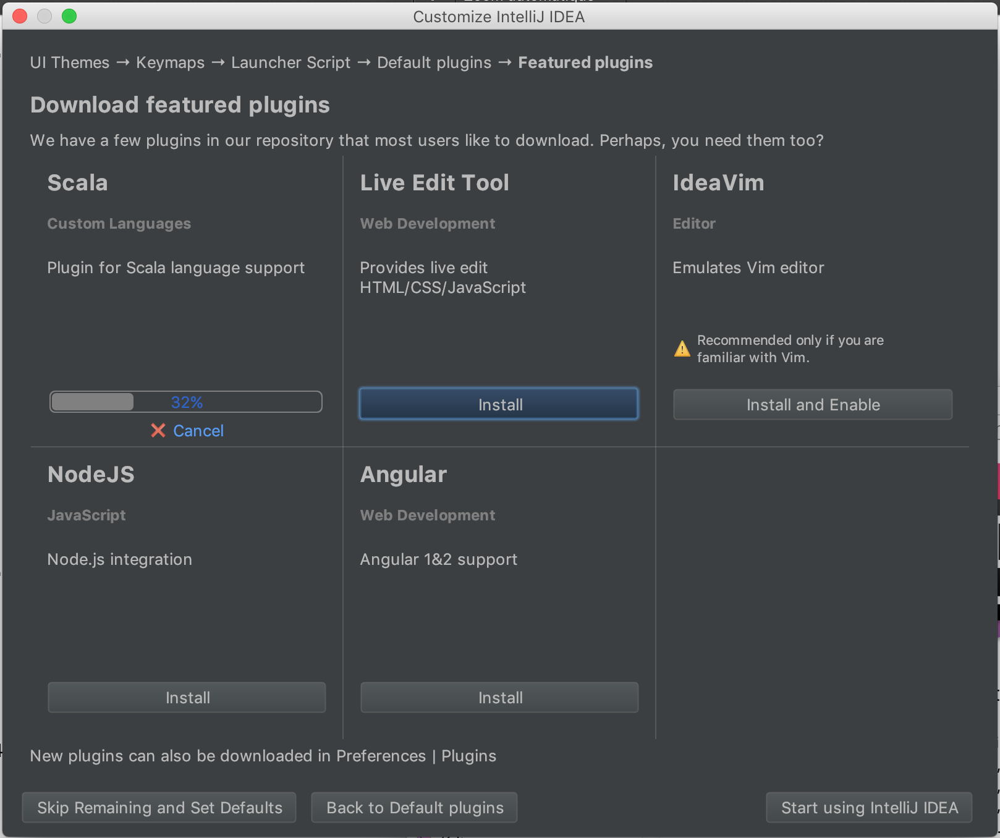
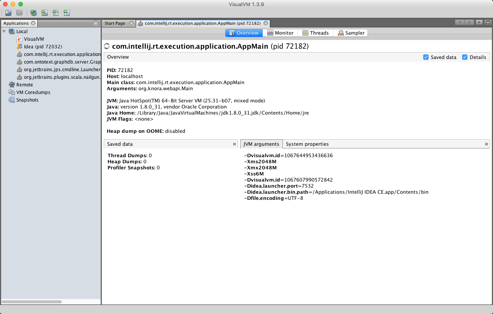
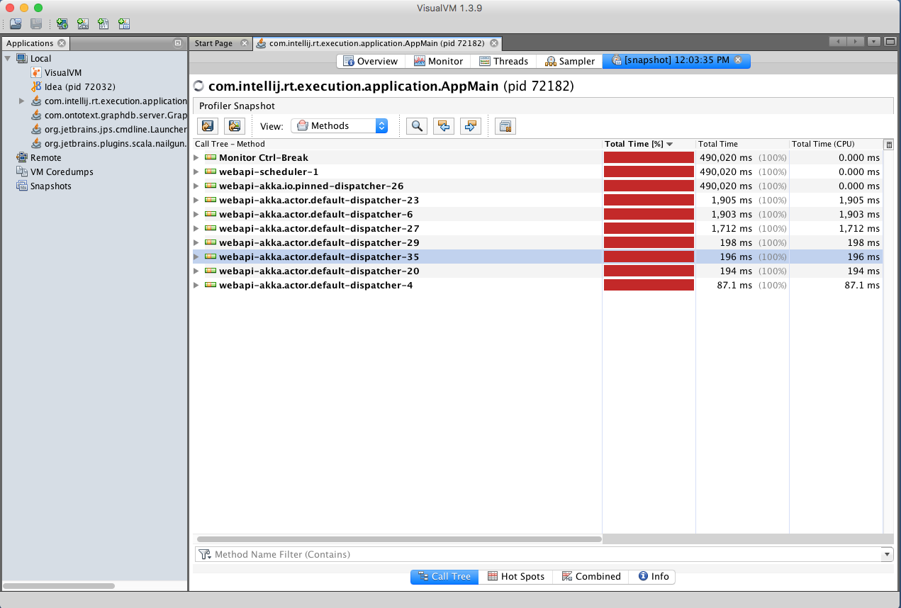

Setup IntelliJ for development of Knora
Create an IntelliJ Project for Knora
- Download and install a version of IntelliJ IDEA that supports Bazel, eg. version
2019.03.05. - Follow the installation procedure and install the
Scala plugin

- Add Bazel Plugin: run InteliJ and install the plugin from inside IntelliJ.
- Create a project for Knora: restart InteliJ and create a project for Knora using
Import Bazel Projectoption.
- Make sure that the Bazel
Workspacepoints to the path of Knora and clicknext.

- Select the
Generate from BUILD fileoption and give the path to the mainBUILD.bazelfile of Knora, clicknext.
- Uncomment the
Scalalanguage and clickFinish.
At this point a .ijwb file is created for Knora project and added to the welcome screen of InteiJ. You can open the project by clicking on it.
- Once the project is built and opened in InteliJ, make sure that project in synced with Bazel build files by clicking
on Bazel logo
Sync Project with Build Files. This needs to be repeated every time there is a change in aBUILD.bazelfile.
- Make sure that the tab size is set correctly to 4 spaces (so you
can use automatic code reformatting):
Preferences -> Code Style -> Scala:
Use IntelliJ IDEA's Run/Debugger Configuration with Knora
First, you need to create an application configuration to run or debug a code. Here the configuration is explained using a test as an example, but similarly the application configuration of InteliJ can be used for building the webapi.
To run a specific test in a command line using Bazel, you would need to give the path of the test relative to its
package as defined in the BUILD.bazel of the package. For example, to run the test GravsearchTypeInspectorSpec in the
command line, you would need to enter bazel test //webapi/src/test/scala/org/knora/webapi/messages/util/search:GravsearchTypeInspectorSpec.
Now to run or debug the same test and its underlying code in InteliJ, a new configuration should be
set up:
- Click on the 'Add Configuration' to create a new application configuration.
- Click on the
+and chooseBazel Command
- Give the type of the command, i.e.
testand the path parameter, as shown below. Then pressApply, and finish the configuration by pressingOK.
After the configuration is completed, it will appear in a drop-down menu that shows all available configurations.
- To run a configured command, eg. to run the test
GravsearchTypeInspectorSpec,- choose its configuration from the drop-down menu
- click on the
Runsymbol, the results will appear in the aRunwindow. Note that, before running the test, the docker container of api should be stopped.
- To debug the code for example by executing a test:
- Click on a line-number to add a breakpoint.
- Choose the respective configuration from the drop-down menu.
- Click on the debugging symbol to start the application with a debugger attached, as shown below:
Profile Knora Using VisualVM in IntelliJ
First, download and install VisualVM.
Then, in IntelliJ, under Preferences -> Plugins, search for the VisualVM Launcher, click on "Search in repositories", install the plugin, and restart IntelliJ. IntelliJ's toolbar should now contain a button with a green triangle on an orange circle, with the tooltip "Run with VisualVM":
You can use this button to run the class org.knora.webapi.app.Main and
profile it in VisualVM. The first time you do this, IntelliJ will ask
you for the path to the VisualVM executable. On macOS this is
/Applications/VisualVM.app/Contents/MacOS/visualvm.
When VisualVM starts, it will open a window like this:

To use the profiler, click on the "Sampler" tab, then on the "CPU" button:
Now run some Knora API operations that you're interested in profiling, preferably several times to allow the sampler to collect enough data. Then click on the "Snapshot" button:
In the snapshot, you'll see a list of threads that were profiled:

You can then browse the call tree for each thread, looking for Knora method calls, to see the total time spent in each method: